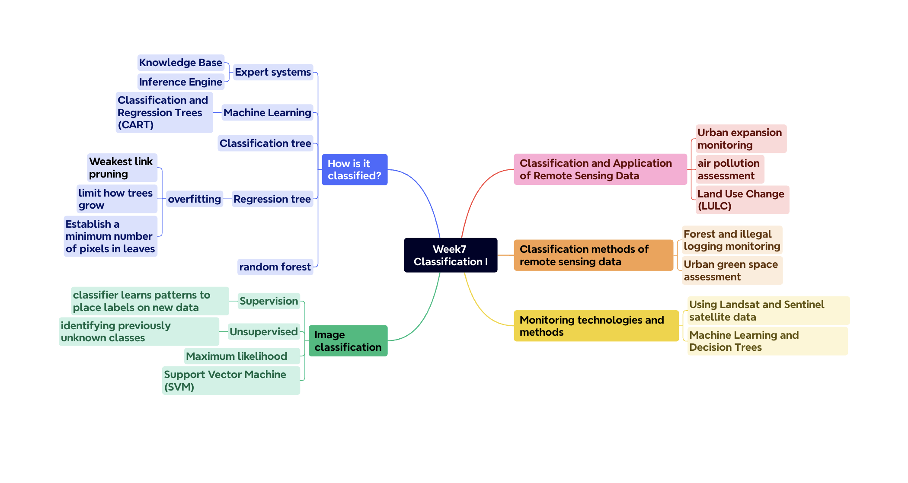
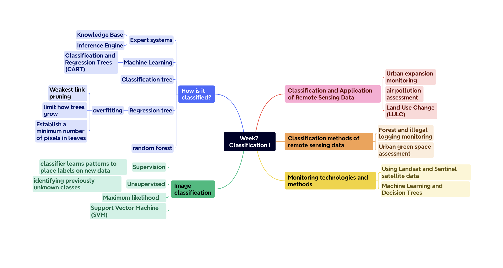
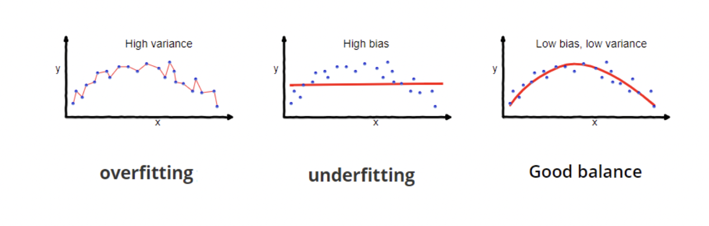
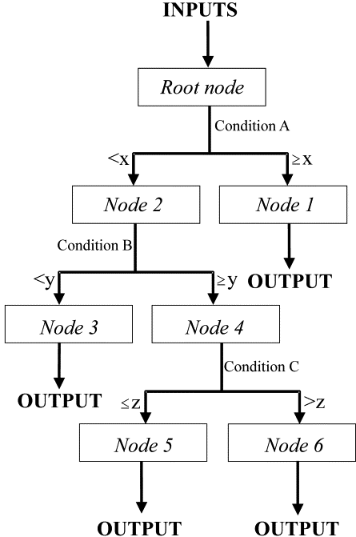

knitr::include_graphics("figures/week7_mindmap.png")
This is a mind map of this week’s lecture.
knitr::include_graphics("figures/week7_mindmap.png")
This week’s practical involves digital image processing, remote sensing information extraction technologies and methods, such as pattern recognition, supervised classification, unsupervised classification, information extraction using artificial intelligence, etc. It discusses techniques such as support vector machines, random forest classifiers, and remote sensing thematic map accuracy assessment in detail. In addition, the method of using Google Earth Engine for cloud-based remote sensing data processing is also introduced, including the process of data acquisition, vector data processing, and the use of different algorithms for image classification and accuracy evaluation. Through practical cases, I learned how to process remote sensing data, perform land cover classification, and evaluate the accuracy of classification results. Random forest is an ensemble learning method that improves the accuracy and robustness of classification by building multiple decision trees. In remote sensing image processing, random forests can effectively process large amounts of data and provide accurate classification results. I am mainly interested in how to train a random forest classifier on the GEE platform, including selecting training and validation samples, training the classifier using the random forest algorithm, and evaluating the accuracy of the classification results. This process involves segmenting the data set, selecting an appropriate feature set, and using tools such as confusion matrices to verify the classification effect. In addition, the practical also emphasizes how to avoid overfitting (shown in the Figure1 below) when processing remote sensing images and ensure the generalization ability of the model by correctly segmenting the data set.
knitr::include_graphics("figures/w7_overfitting.png")
Figure1 overfitting Source: Seema Singh
This section mainly studies the application of machine learning in the field of remote sensing.
Lary et al. (2016) summarized some ML applications and reviewed the unique techniques of machine learning techniques for dealing with geoscience and remote sensing problems. They used and presented two illustrative examples: one using multivariate nonlinear nonparametric regression, and the other One uses multivariate nonlinear unsupervised classification. They used machine learning to estimate atmospheric aerosol abundance and identify and classify dust sources in remotely sensed images. Multivariate nonlinear and nonparametric machine learning methods can capture the relationship between PM2.5 (fine particles) and AOD (aerosol optical depth), and it is able to handle continuous real variables and categorical variables (flags and masks). In addition, self-organizing maps are used to reduce data dimensionality by using self-organizing neural networks. When the authors identify and classify dust edges in remote sensing images, SOMs achieve dimensionality reduction by producing feature maps that usually have two dimensions. Objectively map similarities in data by grouping similar data items together. SOMs are able to learn how to classify input vectors based on their grouping in the input space, thereby learning to recognize adjacent parts of the input space. This approach allows SOMs to display similarities and reduce dimensionality, and they are able to represent nonlinear functions or maps, a significant improvement over principal component analysis (Lary et al., 2016).
For the application of image classification, Yang et al. (2003) studied the application of decision tree technology in image classification using remote sensing data. The study used the classification and regression tree (C&RT) method (Figure 2 shows the overall architecture of the developed C&RT model) to classify plots with different tillage treatments (conventional tillage, reduced tillage or no tillage) and different crops (silage corn or grain corn). Using 71 bands of hyperspectral reflectance ranging from 400 to 950 nanometers as input, the study found that the C&RT model was able to better differentiate between farming practices and residue levels, showing the effectiveness of the decision tree in image processing using hyperspectral reflectance directly as input. Classification potential. Furthermore, decision tree models show better classification performance compared to traditional regression methods. This technology is important for rapidly mapping tillage and residue management practices, thereby aiding in research on the impact of tillage and residue management on soil erosion and other environmental issues. While the study demonstrates the effectiveness of the decision tree technique on a specific data set, it does not explicitly state how the model’s generalization ability is assessed, such as by testing with cross-validation or independent data sets. Additionally, comparing the performance of decision trees and other machine learning methods (such as support vector machines or random forests) on the same task may provide a more comprehensive assessment.
knitr::include_graphics("figures/w7_tree.gif")
Figure2 General structure of a data-mining decision tree. Source: Yang et al. (2003)
These two articles focus on different applications of machine learning in the field of remote sensing. The first article explores the application of machine learning, especially multivariate nonlinear and nonparametric machine learning methods, in estimating atmospheric aerosol abundance and identifying dust sources, highlighting its importance in air quality and climate change research. The second article focuses on the application of decision tree technology in image classification, demonstrating the potential of decision trees in hyperspectral image processing and accurate mapping of farming practices by using hyperspectral reflectance data to classify farming treatments and crop species. Overall, both articles demonstrate the power of machine learning techniques in remote sensing data analysis.
Looking back over this week, I recognized the application of machine learning techniques, specifically decision trees and random forest classifiers, in enhancing the analysis and classification of remote sensing images. Cloud-based data processing using Google Earth Engine reveals the complex balance between leveraging sophisticated algorithms to improve accuracy and the need to prevent overfitting to maintain model generalization. This exploration not only broadened my understanding of remote sensing applications but also highlighted the importance of methodical sample selection and algorithm evaluation in generating reliable, actionable insights from large data sets. My interest in the practical applications of these technologies has deepened, and this week’s learning has inspired me to think more deeply about how machine learning can be further integrated into environmental monitoring and analysis.
Lary, D.J., Alavi, A.H., Gandomi, A.H. and Walker, A.L. (2016). Machine learning in geosciences and remote sensing. Geoscience Frontiers, [online] 7(1), pp.3–10. doi:https://doi.org/10.1016/j.gsf.2015.07.003.
Singh, S. (2018). Understanding the Bias-Variance Tradeoff. [online] Medium. Available at: https://towardsdatascience.com/understanding-the-bias-variance-tradeoff-165e6942b229.
Yang, C.-C., Prasher, S.O., Enright, P., Madramootoo, C., Burgess, M., Goel, P.K. and Callum, I. (2003). Application of decision tree technology for image classification using remote sensing data. Agricultural Systems, [online] 76(3), pp.1101–1117. doi:https://doi.org/10.1016/S0308-521X(02)00051-3.